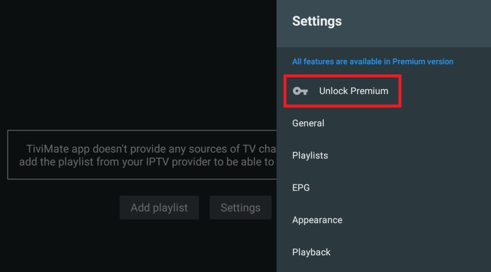
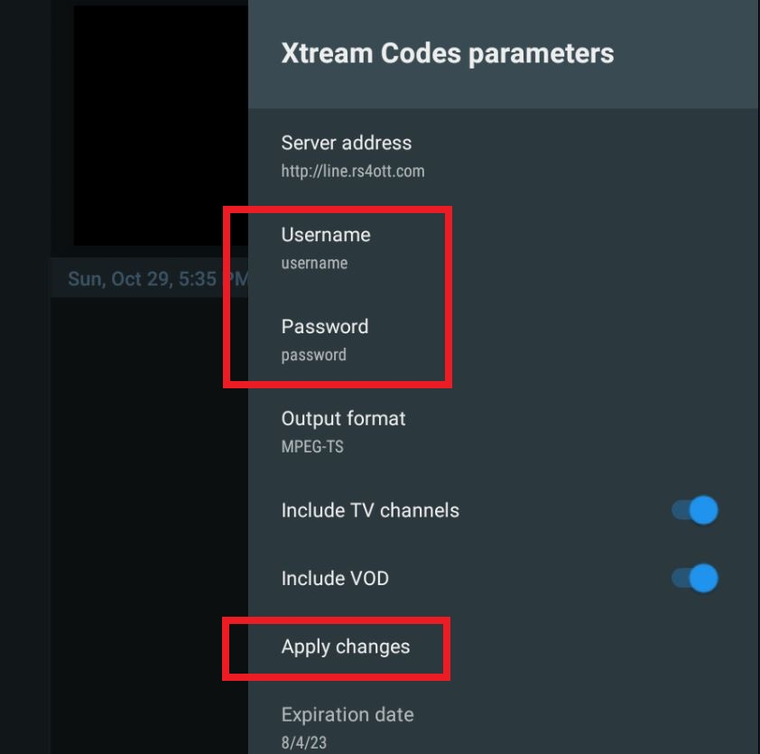

Welcome to SkyMedia set up tutorial.
This guide will help you to set up your connection.
*To follow this stepup guide, you need to have Tivimate app installed.
If you don't have it yet, go back and follow the instruction sent to you for installing the app.
Step1: Open Tivimate App. Then click on "Settings".

Step2: Click on "Unlock Premium".

Step3: Click on "Next".
Step4: Click on "Account".
Step5: Enter Email and Password as provided and then click on Log in.
Step6: Select "Activate new device".
Then enter last 4 digits of your Phone Number.
Afterthat, click on "Activate".
Step7: Click on "Settings" and then "General".
Step8: Click on "Restore Data".
Step9: Type the URL provided in message "https://tinyurl/sky.......".
Note: If your device Autocorrects and adds a space in the URL
Make sure to delete the space before pressing done.
Step10: Click on "Restore".
Step11: Click on "Settings" and then on "Playlist".
Step12: Click on "SKYMEDIA"
Step13: Click on "Xtream Codes parameters"
Step14: Enter Username and Password as provided in the message.
Then select "Apply Change"

Now you can start Streaming. Thank you